Kubernetes Overview
Overview
Kubernetes is an open source container orchestration engine for automating deployment, scaling, and management of containerized applications. It has a large and rapidly growing ecosystem.
The name Kubernetes originates from Greek, meaning helmsman or pilot. Google open-sourced the Kubernetes project in 2014.
This module provides a brief overview on the core concepts in Kubernetes, based on the documentation in kubernetes.io.
Kubernetes Control Plane
Kubernetes API objects are used to describe the desired state of the Kubernetes cluster. This includes describing the desired end state of the applications, workloads, container images, number of replicas, network, disk resources, etc.
The Control Plane maintains a record of all of the Kubernetes Objects in the system and runs continuous control loops to manage the state of all the objects. At any given point in time, the control loops will respond to changes in the cluster and work to make the actual state of all the objects match the desired state.
The Kubernetes Control Plane consists of a collection of processes running within the cluster:
-
-
A collection of 3 processes that run on a single node, designated as the master node in the cluster. The processes are kube-apiserver, kube-controller-manager and kube-scheduler
-
Responsible for maintaining the desired state of the cluster
-
The master can also be replicated for availability and redundancy.
-
-
-
Machines (VMs, physical servers, etc) that run the applications and cloud workflows
-
Nodes are controlled by Kubernetes Master
-
Runs 2 processes, i.e. kubelet and kube-proxy
-
kubelet allows the node to communicate with the Kubernetes Master
-
kube-proxy is a network proxy which reflects Kubernetes networking services on each node
-
Kubernetes Objects
The basic Kubernetes object include:
-
-
A Pod is the smallest unit in the Kubernetes object model that can be created or deployed. It represents processes running on the cluster.
-
A Pod encapsulates an application’s container(s), storages resources, unique network identity (IP address) as well as options that govern how the container(s) should run
-
-
-
An abstract way to expose an application running on a set of Pods as a network service
-
An abstraction which defines a logical set of Pods and a policy by which to access them
-
The set of Pods that are targeted by a Service is usually determined by a selector
-
-
-
On-disk files in a Container are ephemeral, which is not idea for non-trivial applications when running in Containers
-
Kubernetes volume allows data to be preserved across Container restarts
-
It has an explicit lifetime, i.e. the same as the Pod that encloses it
-
There is support for different types of Volumes, such as awsElasticBlock, cephfs, etc
-
-
-
Kubernetes supports multiple virtual clusters backed by the same physical cluster
-
These virtual clusters are called namespaces and are a way to divide cluster resources between multiple users via resource quota
-
Kubernetes also contains higher-level abstractions that rely on controllers to build upon the basic objects to provide additional functionality and convenience features. These include:
-
-
Provides declarative updates for Pods and ReplicaSets
-
You can describe a desired state in a Deployment, and the Deployment Controller changes the actual state to the desired state at a controlled rate.
-
Used in different scenarios, e.g.
-
Create a Deployment to rollout a ReplicaSet
-
ReplicaSet creates Pods in the background and checks the status of the rollout to see if it succeeds or not
-
-
Rollback to an earlier Deployment revision if the current state of the Deployment is not stable
-
Each rollback updates the revision of the Deployment
-
-
Scale up the Deployment to facilitate more load
-
Clean up ReplicaSets
-
-
-
-
Ensures that all or some Nodes run a copy of the Pod
-
Pods are added and garbage collected as nodes are added/removed from the cluster
-
Deleting a DaemonSet will clean up all the Pods that it created
-
Common use cases include the following:
-
Running cluster storage daemon on every node
-
Running logs collection daemon on every node
-
Running node monitoring daemon on every node
-
-
-
-
Workload API object used to manage stateful applications
-
Manages deployment scaling of a set of Pods and provides guarantees about the ordering and uniqueness of these Pods
-
Unlike a Deployment, a StatefulSet maintains a sticky identity for each of their Pods
-
Pods are created from the same spec but are not interchangeable, i.e. each has a persistent identifier that it maintains across any rescheduling
-
-
-
Maintain a stable set of replica Pods running at any given time
-
It is used to guarantee the availability of a specified number of identical Pods
-
A ReplicaSet is linked to its Pods via the Pods’ metadata.ownerReferences field, which specifies what resource the current object is owned by
-
-
-
Creates one or more Pods and ensures that a specified number of them successfully terminate
-
Tracks successful completions of pods
-
When a specified number of successful completions is reached, the task, i.e, Job is complete
-
Deleting a Job will clean up the Pods it created
-
Kubernetes Cluster Architecture
Containers
Containers are a technology for packaging the compiled code for an application along with the dependencies it needs at run time. The standardization from having dependencies included means that we will always get the same behavior for the container no matter where we run it. Containers decouple applications from the underlying infrastructure, which makes it easy to deploy in different private/public clouds or operating systems (OS).
Container Images
A container image represents binary data that encapsulates an application and all its software dependencies. It is an executable software bundle that can run standalone and one that makes very well defined assumptions about its runtime environment.
The container image of an application is typically pushed to a registry before it is referred to in a Pod.
Containers are immutable by design, i.e. you cannot change the code of a container that is already running. If you have a containerized application and want to make changes, you need to build a new container that includes the change, then recreate the container to start from the updated image.
Container Runtimes
The container runtime is the software that is responsible for running containers.
Kubernetes supports several container runtimes:
-
Any other implementation of the Kubernetes CRI (Container Runtime Interface)
Containers vs Virtual Machines
Linux containers and virtual machines (VMs) are packaged computing environments that combine various IT components and isolate them from the rest of the system. Their main differences are in terms of scale and portability.
Containers are typically measured by the megabyte. They do not package anything bigger than an application and all the files necessary to run, and are often used to package single functions that perform specific tasks (known as a microservice). The lightweight nature of containers and their shared OS makes them very easy to move across multiple environments.
VMs are typically measured by the gigabyte. They usually contain their own OS, allowing them to perform multiple resource-intensive functions at once. The increased resources available to VMs allow them to abstract, split, duplicate, and emulate entire servers, OSs, desktops, databases, and networks.
Compared to VMs, containers are best used to:
-
Build cloud-native apps
-
Package microservices
-
Instill DevOps or CI/CD practices
-
Move scalable IT projects across a diverse IT footprint that shares the same OS
Compared to containers, VMs are best used to:
-
House traditional, legacy, and monolithic workloads
-
Isolate risky development cycles
-
Provision infrastructural resources (such as networks, servers, and data)
-
Run a different OS inside another OS (such as running Unix on Linux)
Navigating OpenShift Web Console
Navigating OpenShift Web Console
This module provides a brief overview of the OpenShift Web Console.
Logging into An OpenShift Cluster
The OpenShift cluster web console url for our workshop will be https://console-openshift-console.apps.cluster-844c.844c.example.opentlc.com. The login page prompts users for their Username and Password.
Your user name will be user1 and password is
r3dh4t1!
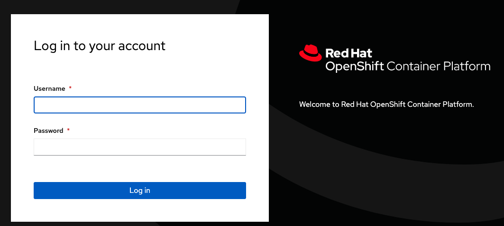
Creating a New Project
Proceed to create a new project with the name user1-myproject by selecting Create Project.
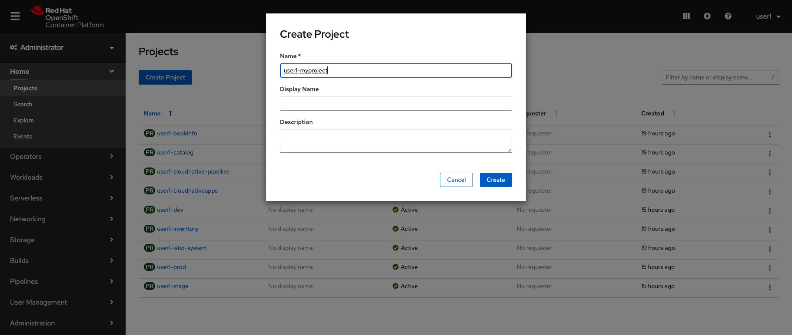
Upon creating a project you will be brought to the overview page for the new project.
If you want to get to a list of all the projects that are available, you
can select Home→Projects from the side menu on the left. You can
click on the hamburger menu item button on the top left corner of the
web console if you do not see the side menu.
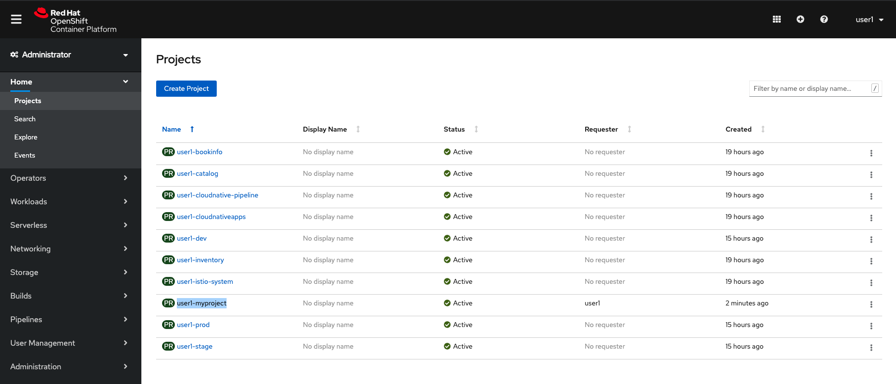
Accessing Project
Click on user1-myproject and we will get to the Overview page of the
project
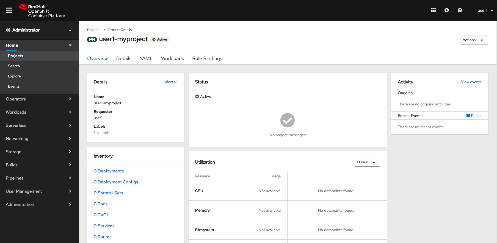
Next, select the Developer perspective for the project instead of the
Adminstrator perspective from the left hand side menu
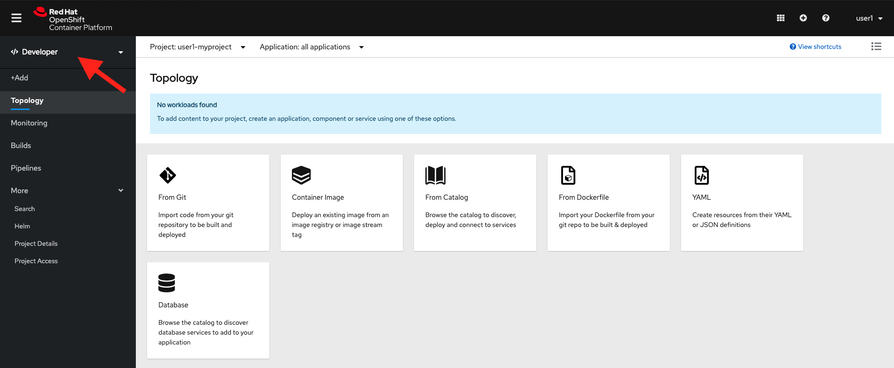
Deploying Application Using Web Console
Proceed to select From Catalog. This will bring us to the Developer Catalog.
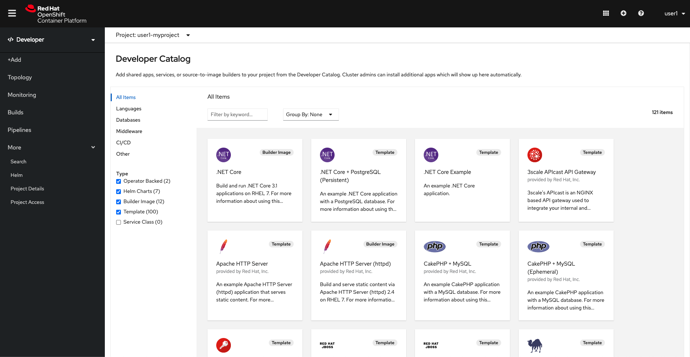
In this example, we will deploy a web application which is implemented using Python.
Click on Languages and then select Python. We will see the options for deploying applications which are related to Python. Select the Python tile for the generic Python Source-to-Image (S2I) builder.
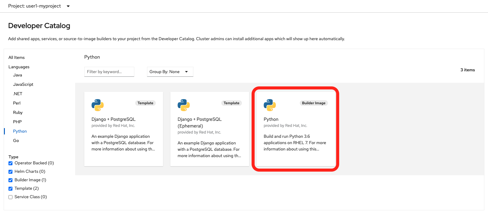
This will bring up a dialog with the details of the builder image. Click
on Create Application in the dialog.
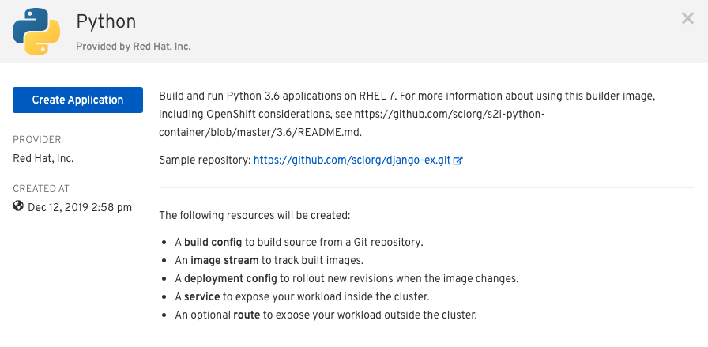
Under the Git settings, we will insert the Git Repo URL that we will
be using for this example,
i.e. https://github.com/openshift-katacoda/blog-django-py. This
repository contains a sample implementation of a blog application,
designed to show the various features of OpenShift. The blog application
is implemented using Python and Django.
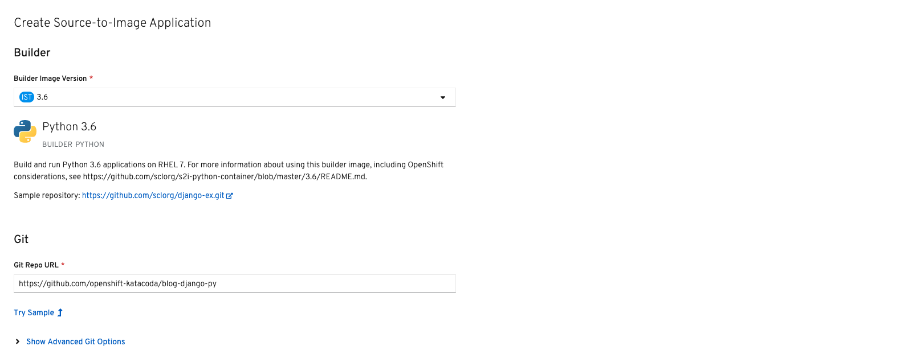
Next, we will scroll down to the General settings. We can see that the
settings in the Application Name field have been pre-populated with
values based on the Git repository name. We will need to select Deployment Config
under the Resources section. Other changes can be made as needed.
Proceed to hit the Create button at the bottom of the page after this.
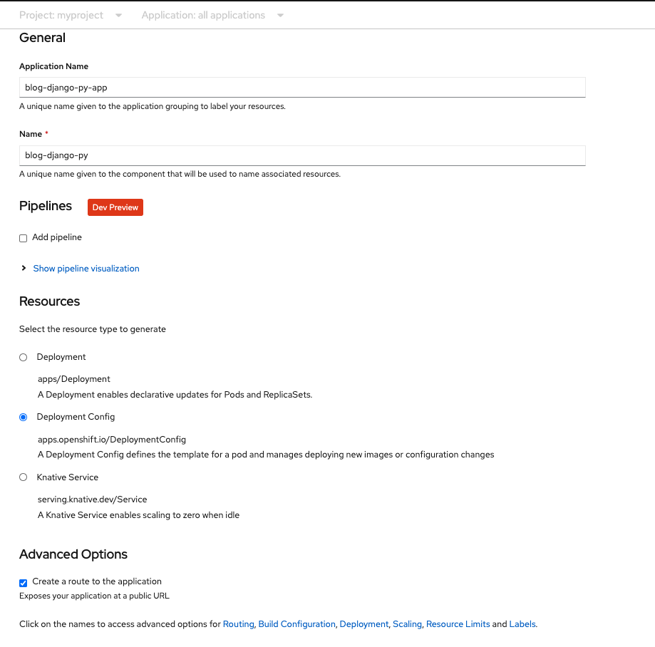
Upon hitting the Create button, we will get redirected to the
Topology overview of the project.
The topology overview provides a visual representation of the application you have deployed.
The Git icon shown to the lower right of the ring can be clicked on to take us to the hosted Git repository from which the source code for the application was built.
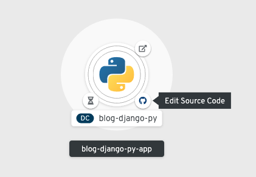
The icon shown to the lower left represents the build of the application. The icon will change from showing an hour glass, indicating the build is starting, to a sync icon indicating the build is in progress, and finally to a tick or cross depending on whether the build was successful or failed. Clicking on this icon will take you to the details of the current build.
The ring itself will progress from being white, indicating the deployment is pending, to light blue indicating the deployment is starting, and blue to indicate the application is running. The ring can also turn dark blue if the application is stopping.
Once the build has started, click on the View Logs link shown on the Resources panel.
This will allow you to monitor the progress of the build as it runs. The
build will have completed successfully when you see a final message of
Push successful. This indicates that the container image for the
application was pushed to the OpenShift internal image registry.
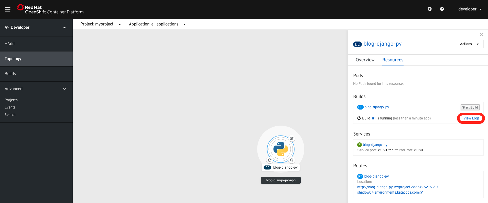
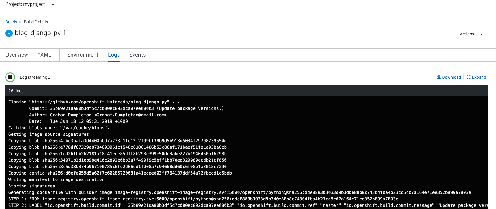
Once the build of the application image has completed, it will be deployed.
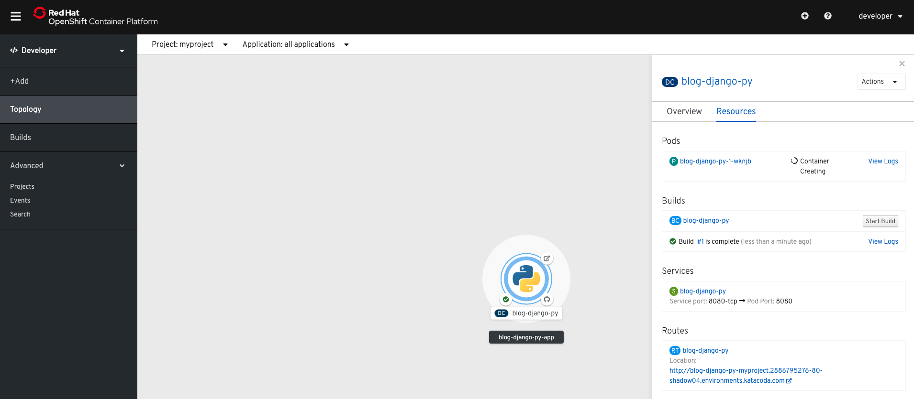
A Route is automatically created for the application upon successful creation of the Django application. The route will be exposed outside of the cluster. The URL which can be used to access the application from a web browser will be visible.
Once the application is running, the icon shown to the upper right can be clicked to open the URL for the application route which was created.
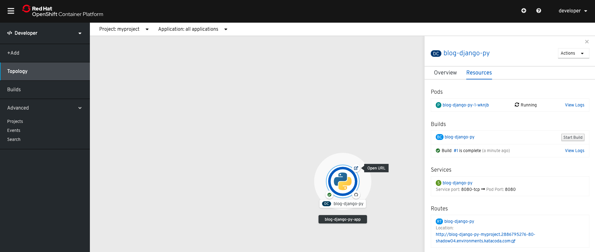
Clicking on the URL link will bring us to the Django application that was just deployed.
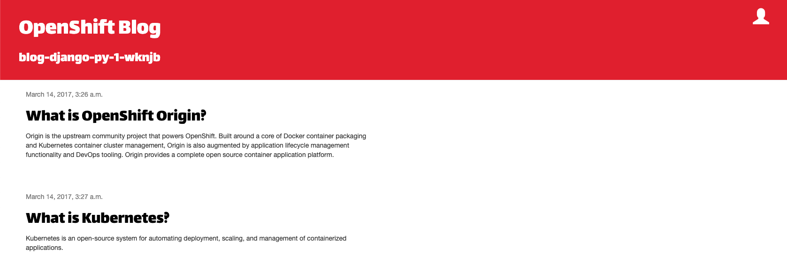
Administrator View
Select the Adminstrator perspective for the project from the left hand
side menu
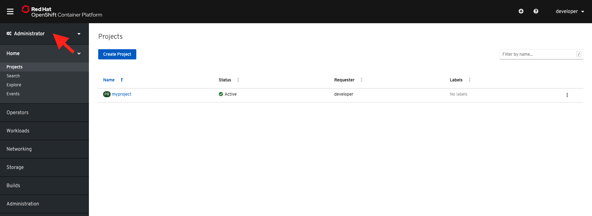
Pods
OpenShift Container Platform leverages the Kubernetes concept of a pod, which is one or more containers deployed together on one host, and the smallest compute unit that can be defined, deployed, and managed.
Pods are the rough equivalent of a machine instance (physical or virtual) to a container. Each pod is allocated its own internal IP address, therefore owning its entire port space, and containers within pods can share their local storage and networking.
Pods have a lifecycle; they are defined, then they are assigned to run on a node, then they run until their container(s) exit or they are removed for some other reason. Pods, depending on policy and exit code, may be removed after exiting, or may be retained in order to enable access to the logs of their containers.
OpenShift Container Platform treats pods as largely immutable; changes cannot be made to a pod definition while it is running. OpenShift Container Platform implements changes by terminating an existing pod and recreating it with modified configuration, base image(s), or both. Pods are also treated as expendable, and do not maintain state when recreated. Therefore pods should usually be managed by higher-level controllers, rather than directly by users.
Go to the Workloads tab and select Pods to view the pods in this
project.
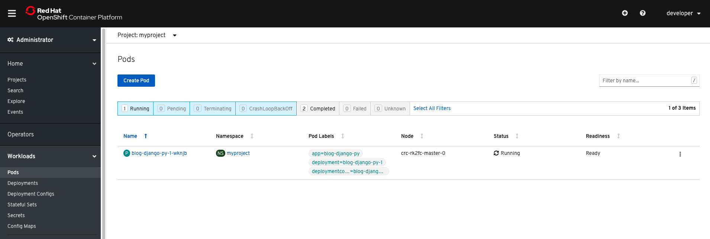
Services
A Kubernetes service serves as an internal load balancer. It identifies a set of replicated pods in order to proxy the connections it receives to them. Backing pods can be added to or removed from a service arbitrarily while the service remains consistently available, enabling anything that depends on the service to refer to it at a consistent address. The default service clusterIP addresses are from the OpenShift Container Platform internal network and they are used to permit pods to access each other.
Services are assigned an IP address and port pair that, when accessed, proxy to an appropriate backing pod. A service uses a label selector to find all the containers running that provide a certain network service on a certain port.
Like pods, services are REST objects. Go to the Networking tab and
select Services to view the services in this project.
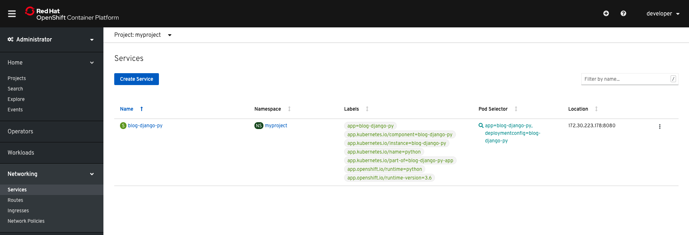
Routes
An OpenShift route is a way to expose a service by giving it an
externally-reachable hostname like www.example.com. A defined route
and the endpoints identified by its service can be consumed by a router
to provide named connectivity that allows external clients to reach your
applications.

Deployments and DeploymentConfigs
Deployments and DeploymentConfigs in OpenShift Container Platform are API objects that provide two similar but different methods for fine-grained management over common user applications. A DeploymentConfig or a Deployment describes the desired state of a particular component of the application as a Pod template.
DeploymentConfigs involve one or more ReplicationControllers, which contain a point-in-time record of the state of a DeploymentConfig as a Pod template. Similarly, Deployments involve one or more ReplicaSets, a successor of ReplicationControllers.
The DeploymentConfig deployment system provides the following capabilities:
-
A DeploymentConfig, which is a template for running applications
-
Triggers that drive automated deployments in response to events
-
User-customizable deployment strategies to transition from the previous version to the new version. A strategy runs inside a Pod commonly referred as the deployment process.
-
A set of hooks (lifecycle hooks) for executing custom behavior in different points during the lifecycle of a deployment
-
Versioning of your application in order to support rollbacks either manually or automatically in case of deployment failure
-
Manual replication scaling and autoscaling
Go to the Workloads tab and select Deployment Configs to view the
DeploymentConfig in this project.
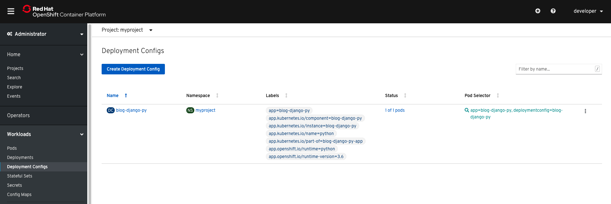
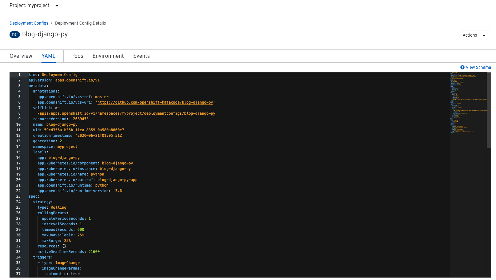
Replication Controllers
A ReplicationController ensures that a specified number of replicas of a Pod are running at all times. If Pods exit or are deleted, the ReplicationController acts to instantiate more up to the defined number. Likewise, if there are more running than desired, it deletes as many as necessary to match the defined amount.
A ReplicationController configuration consists of:
-
The number of replicas desired (which can be adjusted at runtime)
-
A Pod definition to use when creating a replicated Pod
-
A selector for identifying managed Pods
Go to the Workloads tab and select Replication Controllers to view
the ReplicationController for this project.
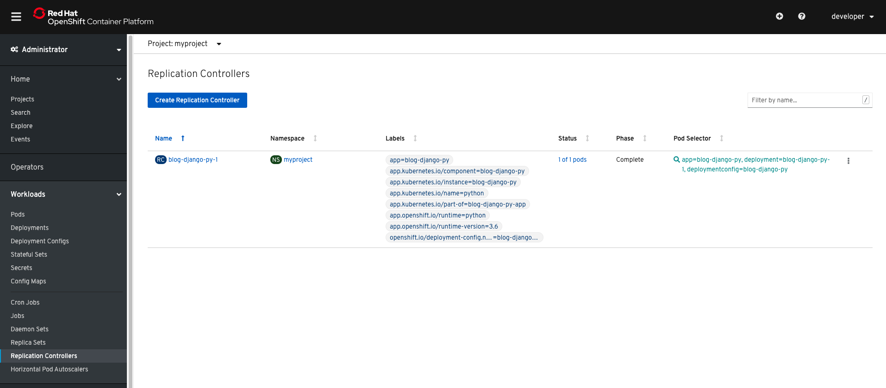
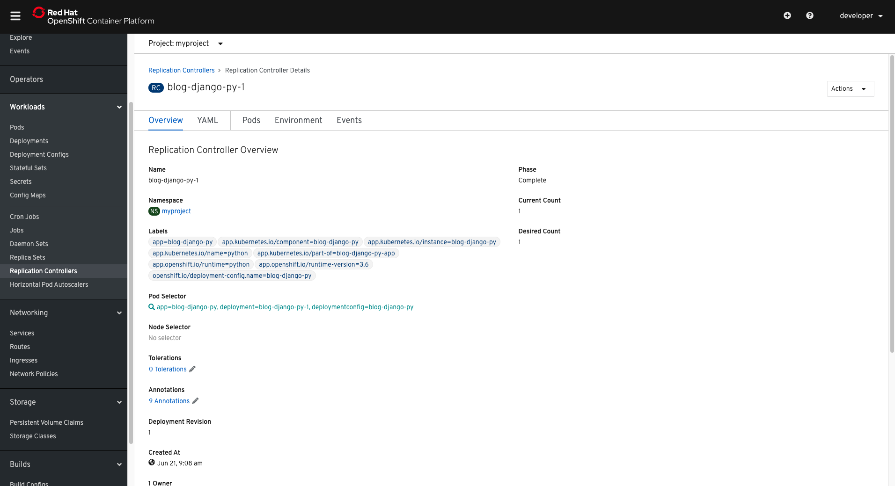
Secrets
The Secret object type provides a mechanism to hold sensitive
information such as passwords, OpenShift Container Platform client
configuration files, dockercfg files, private source repository
credentials, and so on. Secrets decouple sensitive content from the
pods. You can mount secrets into containers using a volume plug-in or
the system can use secrets to perform actions on behalf of a pod.
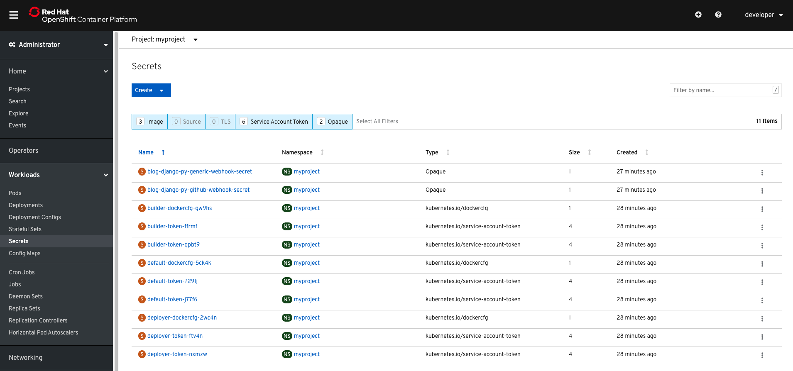
Config Maps
Many applications require configuration using some combination of configuration files, command line arguments, and environment variables. These configuration artifacts should be decoupled from image content in order to keep containerized applications portable.
The ConfigMap object provides mechanisms to inject containers with
configuration data while keeping containers agnostic of OpenShift
Container Platform. A ConfigMap can be used to store fine-grained
information like individual properties or coarse-grained information
like entire configuration files or JSON blobs.
The ConfigMap API object holds key-value pairs of configuration data
that can be consumed in pods or used to store configuration data for
system components such as controllers. ConfigMap is similar to
secrets, but designed to more conveniently support working with strings
that do not contain sensitive information.
Go to the Workloads tab and select Config Maps to view the Config
Maps for this project. In this case, we can see the CA certificates as
config maps.
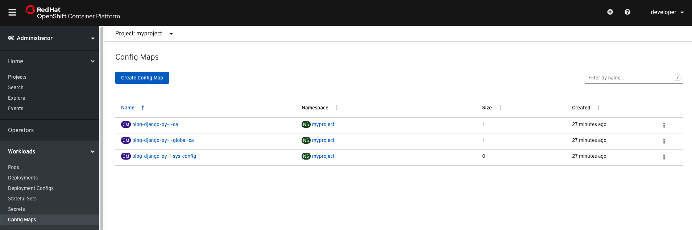
Persistent Volume and Volume Claim
A PersistentVolume object is a storage resource in an OpenShift
Container Platform cluster. Storage is provisioned by cluster
administrator by creating PersistentVolume objects from sources such
as GCE Persistent Disk, AWS Elastic Block Store (EBS), and NFS mounts.
Storage can be made available by laying claims to the resource. We can
make a request for storage resources using a PersistentVolumeClaim
object; the claim is paired with a volume that generally matches our
request.
A PersistentVolume is a specific resource. A PersistentVolumeClaim
is a request for a resource with specific attributes, such as storage
size. In between the two is a process that matches a claim to an
available volume and binds them together. This allows the claim to be
used as a volume in a pod. OpenShift Container Platform finds the volume
backing the claim and mounts it into the pod.
A PersistentVolumeClaim is used by a pod as a volume. OpenShift
Container Platform finds the claim with the given name in the same
namespace as the pod, then uses the claim to find the corresponding
volume to mount.
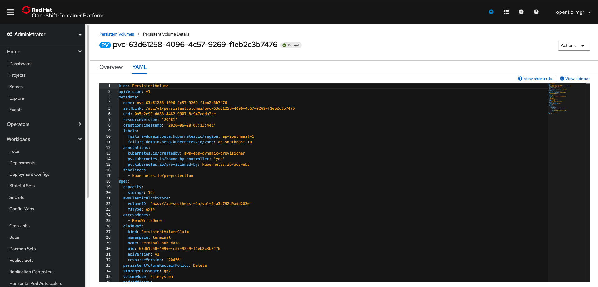
Summary
In this chapter, we learnt about deploying an application from source
code using a Source-to-Image (S2I) builder. We have deployed the
application from the web console from Developer perspective and looked
at the different tabs under the Administrator perspective.
The web application was implemented using the Python programming language. OpenShift provides S2I builders for a number of different programming languages/frameworks in addition to Python. These include Java, NodeJS, Perl, PHP and Ruby.
Getting Started with MLOps
Getting Started with MLOps
In the next few modules you will look at how AI/ML workload on OpenShift (OCP) can be integrated with Red Hat Application Services portfolio, focusing on MLOps, which enables data science and IT teams to collaborate and increase the pace of model development and deployment.
This workshop is for data scientists and ML engineers who want to apply DevOps Principles to MLOps.
Automating The End-To-End Lifecycle Of Machine Learning Applications
In reality, that intelligent application isn’t just one small deployed thing. It is an entire distributed system in and of itself with many moving parts that are all tied together in various ways. A data scientist’s model is just one small part of this large distributed system, but we’re going to focus on it for this workshop
As shown in the following diagram, only a small fraction of a real-world ML system is composed of the ML code. The required surrounding elements are vast and complex.

What Is MLOps
From Wikipedia:
MLOps (a compound of
machine learningandoperations) is a practice for collaboration and communication between data scientists and operations professionals to help manage production ML (or deep learning) lifecycle. Similar to the DevOps or DataOps approaches, MLOps looks to increase automation and improve the quality of production ML while also focusing on business and regulatory requirements.
Differences Between DevOps And MLOps
Unlike DevOps, MLOps is much more experimental in nature. Data scientists try different features, parameters and models. With all these changes, they must manage their code base and datasets, to create reproducible results.
Unlike application developments, MLOps needs to:
-
Data/model versioning != code versioning: Model reuse has an entirely different meaning compared to software reuse, as models need tuning based on scenarios and data.
-
Model monitoring. Models statistics needs to be monitored to ensure is performing within limits, so that it can be retrained when necessary (retraining needs to be on-demand)
-
Testing. In addition to unit tests, models need to be validated for model quality, such as accuracy, AUC, ROC, confusion matrix, precision, recall, etc.
As such:
-
Continuous integration (CI) for MLOps also involves validating the data and the schema in addition to testing code.
-
Continuous deployment(CD) validating the performance of models in production – including the ability to deploy new models and rollback changes from a model.
-
Continuous testing (CT) to retrain and serve models. CT is unique to ML systems because it allows us to keep our model updated.
Data Science Steps For MLOps

Image Source: CD4ML
Model Building
Once the data has been cleaned and is made available, we will start the iterative approach for model building.
Feature Engineering, Model Evaluation and Experimentation
As the ML process is very experimental in nature and you may have multiple experiments running in parallel, it is important to capture key model metrics. This helps in the decision whether the model can be promoted through the different stages, such as staging and finally to production.
We will be using JupyterHub and MLflow to log the model and experiment results.
Reproducible Dataset
This allows the data scientists to reproduce the model results, but also allows them to share the work with fellow data scientists or machine learning engineers who need to deploy the model.
We will be using dvc in this workshop.
Productize Model
Once a model has been chosen, we will begin to productize the model from a notebook to source code. This allows better source revision control compared to having a notebook in a Source Code Management (SCM).
We will be using Git to version control the source code.
Testing
As part of the pipeline, the model will be validated and tested.
Model Deployment
Once the model has been built, the model will be packaged into a container image and deployed onto OpenShift by the pipeline.
Model Monitoring and Observability
Seldon models can expose prometheus endpoints which we will use to monitor key model metrics using the Grafana dashboard.
Continuous Delivery
Tekton CI/CD pipeline will be used in the workshop to automate the different stages, such as building, testing, deployment and promotion of the model onto OpenShift.
Let’s get started!
Your Workshop Environment
The Workshop Environment You Are Using
Your workshop environment consists of several components which have been pre-installed and are ready to use. Depending on which parts of the workshop you are doing, you will use one or more of:
-
Red Hat OpenShift - You will use one or more projects (Kubernetes namespaces) that are your own and are isolated from other workshop students
-
Red Hat CodeReady Workspaces - based on Eclipse Che, it is a cloud-based, in-browser IDE (similar to IntelliJ IDEA, VSCode, Eclipse IDE). You’ve been provisioned your own personal workspace for use with this workshop. You will write, test, and deploy code from here.
-
Red Hat AMQ Streams - streaming data platform based on Apache Kafka
-
Buildah - Buildah is a tool that facilitates building Open Container Initiative (OCI) container images. We will be using Buildah in this workshop to create models from constructed images.
-
Jupyter Notebook - An open-source web application that allows you to create and share documents that contain live code, equations, visualizations and narrative text. Jupyter Notebook will be used to build, train and test models in this workshop.
-
JupyterHub - A multi-user Hub that spawns, manages, and proxies multiple instances of the single-user Jupyter notebook server. In this workshop we will be logging into this environment to provision instances of Jupyter Notebook.
-
Tekton - An open source project that provides a framework to create cloud-native CI/CD pipelines quickly. We will be creating pipelines based on Tekton in this workshop.
-
Argo CD - Argo CD is a declarative, GitOps continuous delivery tool for Kubernetes.
-
Prometheus - An open-source systems monitoring toolkit for event monitoring and alerting. Prometheus will be collating the metrics from the produced models in this workshop.
-
Grafana - An open-source visualization and analytics software. In this workshop Grafana allows you to query, visualize, alert on, and explore the metrics collected by Prometheus.
-
Gogs - Gogs is a simple, stable and extensible self-hosted Git service which will be created for the purposes of this workshop.
-
Seldon - Provides a set of tools for deploying machine learning models at scale. In this workshop, Seldon will be used for a variety of purposes including providing endpoints for metric collection and allows us to provide feedback to the created models.
-
Nexus - Nexus Repository OSS is an open source repository that supports many artifact formats, including Docker, Java™, and npm.
You will be provided clickable URLs throughout the workshop to access the services that have been installed for you.
Workshop Flow
The goal of this workshop is the delivery of an end-to-end AI/ML solution for fraud detection based on the respective software components and their processes. The main steps are as follows:
1) Create an AI/ML model that predicts fraud transactions using Jupyter Notebook.
2) To productize the model. Using CodeReady Workspaces provided by OpenShift to convert code into python, before delivering it into a pipeline for the process of building, testing and deploying code, mainly in three different environments:
-
Development Environment: Created models will be converted into python code here via CodeReady Workspaces, where these models will be trained and tested with a mixture of fraudulent and non-fraudulent inputs. Versioning will be done to ensure reproducibility of the model.
-
Staging Environment: When the model has undergone all the relevant testing, an image will be created with Buildah and stored in Nexus
-
Production Environment: Once the model has been verified to be in proper working condition, it will be promoted to the production environment, where approved images are deployed into the environment.
3) Monitoring provided by Prometheus/Grafana provides insight into the credibility of the fraud detection model as well as account for any sanity check on the results derived from the associated data. The visualized metrics reflect any performance degradation of the model, which preempts us to decide on either starting on new experiment iterations or retraining the model with new data, considering the regular evolution of fraud practices in the real world.
Pipeline
A pipeline in software development is an automated process that drives software through a path of building, testing, and deploying code. By automating the process, the objective is to minimize human error and maintain a consistent process for how software is deployed. Tools that are included in the pipeline could include compiling code, unit tests, code analysis, security, and installer creation. For containerized environments, this pipeline would also include packaging the code into a container to be deployed across the hybrid cloud. A pipeline is critical in supporting continuous integration and continuous deployment (CI/CD) processes.
In this workshop, the CI/CD experience is provided by a combination of OpenShift Pipelines (based on Tekton) and Argo CD.
OpenShift Pipelines is responsible for the CI process in which models are built and trained in the staging process, and pushed to a Nexus registry thereafter. Argo CD is used to deliver the CD process, responsible for monitoring the deployment and pushing any new changes in the deployment to OpenShift.
GPU
In this workshop, we will not be using GPU to train the models.
GPU is supported on OpenShift via the Nvidia GPU Operator and Node Feature Discovery (NFD) Operator. The NFD operator identifies hardware device features in nodes. It solves the general problem of identifying and cataloging hardware resources in the infrastructure nodes so they can be made available to OpenShift.
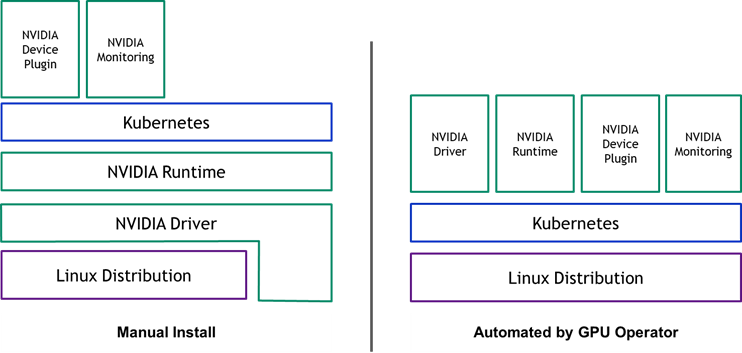
The NFD operator uses vendor PCI IDs to identify hardware in a node and Nivdia uses the PCI ID 10de.
$ oc describe node ip-10-0-132-138.us-east-2.compute.internal | egrep 'Roles|10de'
Roles: worker
feature.node.kubernetes.io/pci-10de.present=true10de appears in the node feature list for the GPU-enabled node we defined. These labels created by the NFD operator are what the GPU Operator uses in order to determine where to deploy the driver containers for the GPU(s).
You can then consume these GPUs from your containers by requesting nvidia.com/gpu just like you request cpu or memory.
resources:
requests:
nvidia.com/gpu: 1 # Num of GPUs
limits:
nvidia.com/gpu: 1Model Training And Serving Frameworks
First Step: Confirm Your Username!
Look in the box at the top of your screen. Is your username set already? If so it will look like this:
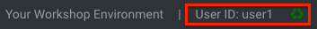
If your username is properly set, then you can move on. If not, in the above box, enter the user ID you were assigned like this:
This will customize the links and copy/paste code for this workshop. If you have accidentally typed the wrong username, just click the green recycle icon to reset it.
Click-to-Copy
You will see various code and command blocks throughout these exercises which can be copy/pasted directly by clicking anywhere on the block of text. Simply click once and the whole block is copied to your clipboard, ready to be pasted with CTRL+V (or Command+V on Mac OS).
echo "This is a bash shell command that you can copy/paste by clicking"Your Environment
Your user id is user1
OpenShift Console url is https://console-openshift-console.apps.cluster-844c.844c.example.opentlc.com. Username/password is user1/r3dh4t1!.
CodeReady Workspaces url is https://codeready-labs-infra.apps.cluster-844c.844c.example.opentlc.com. Username/password is user1/r3dh4t1!.
Git url is https://gogs-labs-infra.apps.cluster-844c.844c.example.opentlc.com. Username/password is user1/r3dh4t1!.
JupyterHub url is https://jupyterhub-labs-infra.apps.cluster-844c.844c.example.opentlc.com
How to complete this workshop
Simply follow these instructions end-to-end. You will need to do quite a bit of copy/paste for Linux commands and source code modifications, as
well as clicking around on various consoles used in the labs. When you get to the end of each section, you can click the Next > button at
the bottom to advance to the next topic. You can also use the menu on the left to move around the instructions at will.
The entire workshop is split into one or more modules - Look at the top of the screen in the header to see which module you are on. After you complete this module, your instructor may have additional modules to complete.
Good luck, and let’s get started!
Exploring Data
Exploring Data
You will be using Jupyter notebooks from OpenDataHub to explore credit card fraud data, using tools such as dvc and Pandas.
About OpenDataHub
Open Data Hub is a blueprint for building an AI as a service platform on Red Hat’s Kubernetes-based OpenShift® Container Platform and Ceph Object Storage. It inherits from upstream efforts such as Kafka/Strimzi and Kubeflow, and is the foundation for Red Hat’s internal data science and AI platform. Data scientists can create models using Jupyter notebooks, and select from popular tools such as TensorFlow™, scikit-learn, Apache Spark™ and more for developing models. Teams can spend more time solving critical business needs and less on installing and maintaining infrastructure with the Open Data Hub.
About JupyterHub
JupyterHub from ODH allows OpenShift users to access Jupyter notebooks. It gives users access to computational environments and resources without burdening the users with installation and maintenance tasks.
About DVC
Data Version Control (DVC) keeps metafiles in Git to describe and version control your datasets and models. DVC supports a variety of external storage types as a remote cache for large files.
Data management is the core part of DVC for large files, datasets, ML models versioning and efficient sharing. In this workshop, you will be using DVC to retrieve the dataset from a S3 bucket provided by Red Hat OpenShift Container Storage (OCS).
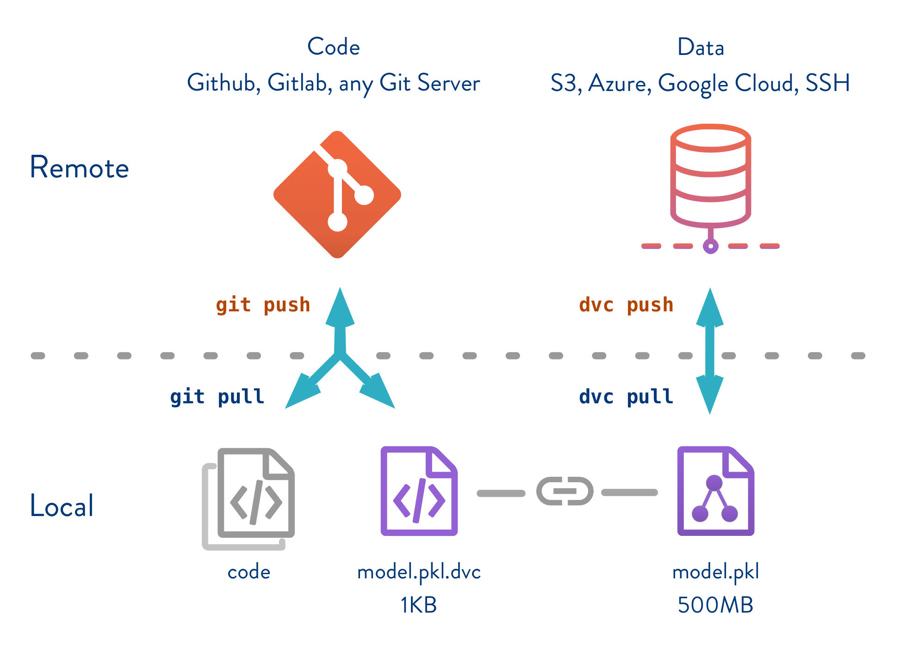
The repository has been configured to use S3 that comes from OCS. The S3 bucket will contain the actual training data. For example:
[core]
remote = myremote
['remote "myremote"']
url = s3://mlflow-obc-9cebe5a6-303b-49ba-9e75-2224fa2313f9/dvcf4g2
endpointurl = https://s3-openshift-storage.apps.cluster-844c.844c.example.opentlc.comYou can view your .dvc files in your repository. .dvc files contains metadata such as filename and md5sum. For example:
md5: cbd842a1ee4036fb7399d2dc568b5e50
outs:
- md5: e90efcb83d69faf99fcab8b0255024de
path: creditcard.csv
cache: true
metric: false
persist: falseWe then tagged the repository as v1.0, thus allowing us to retrieve consistent training data.
Logging in
Begin by logging into JupyterHub.
Your user name will be user1 and password is
r3dh4t1!.
You may see a notification on authorizing access, select “Allow selected permissions” and proceed.
Upon logging in, start a new notebook by choosing
rh-mlops-workshop-notebook:3.6 image in the drop down box and then click on
Spawn. Leave the rest of the options as default.
|
If the notebook page did not appear, try refreshing the page or reach out to your instructor. |
Once the notebook page is up and running, there is a notebook "rh-mlops-workshop/notebooks/0 intro to juypyter.ipynb" to help you get started on familiarizing with the Jupyter interface.
After you have acquainted yourself with how to edit and run Jupyter Notebooks, click on "rh-mlops-workshop/notebooks/1 data exploration.ipynb" to load the notebook. Run the individual code blocks contained in this notebook and observe the output.
After running notebook “1 data exploration”, the output would be similar to the example below.
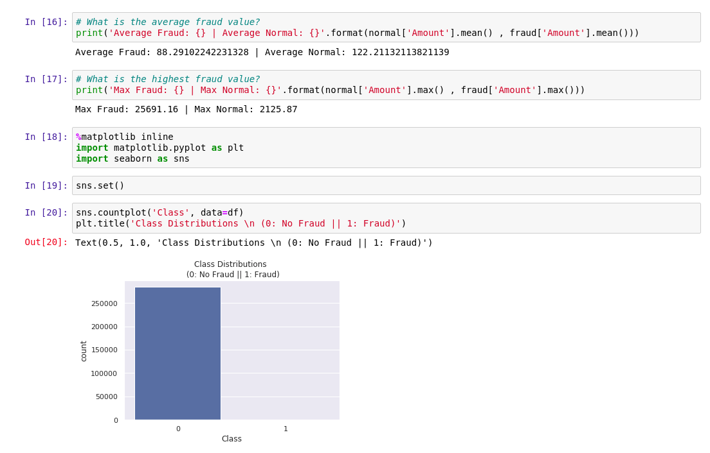
Build the First Model
Build Your First Model
In this module, you will begin to use Jupyter Notebook to build, train and test the model.
Logging in
Begin by logging into JupyterHub.
Your user name will be user1 and password is
r3dh4t1!.
Upon logging in, start a new notebook by choosing
rh-mlops-workshop-notebook:3.6 image in the drop down box and then click on
Spawn. Leave the rest of the options as default.
|
If the notebook page did not appear, try refreshing the page or reach out to your instructor. |
Once the notebook page is up and running, click on
rh-mlops-workshop/notebooks/2 building the first model.ipynb to load the notebook.
After running notebook “2 building the first model”, the output would be similar to the example below.
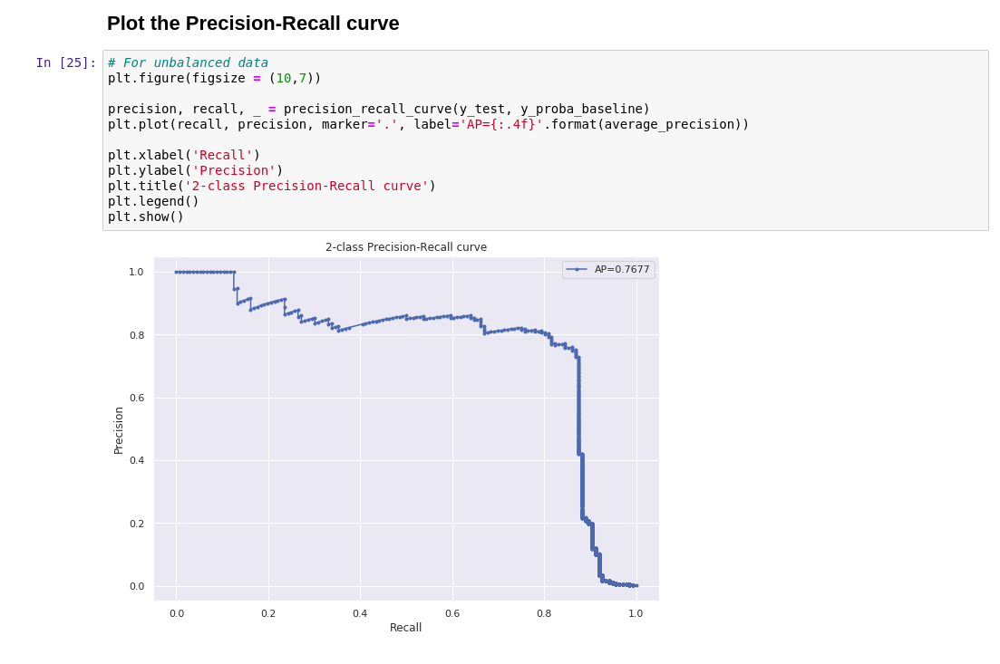
Productize the Model
Productize The Model
Now the model has been created, we will now begin to productize the model in the development environment.
We will be using CodeReady Workspaces and juyptext to convert
the notebook to python code.
Logging Into CodeReady Workspaces
You will be using Red Hat CodeReady Workspaces, an online IDE based on Eclipse Che. Built on the open Eclipse Che project, Red Hat CodeReady Workspaces uses Kubernetes and containers to provide any member of the development or IT team with a consistent, secure, and zero-configuration development environment. The user experience is as fast and familiar as an integrated development environment (IDE) on their laptop.
CodeReady Workspaces is included in OpenShift® and is available in the OpenShift Operator Hub. Once deployed, CodeReady Workspaces provides development teams a faster and more reliable foundation on which to work, and it gives operations centralized control and peace of mind.
To get started, access the
CodeReady Workspaces instance, and log in using the username and
password you’ve been assigned
(e.g. user1/r3dh4t1!):

Once you log in, you’ll be placed on your personal dashboard. Click on the name of the pre-created user1-workspace on the bottom left, as shown below (the name will be different depending on your assigned number).
After a minute or two, you’ll be placed in the workspace:

|
If things get weird or your browser appears, you can simply reload the browser tab to refresh the view. |
This IDE is based on Eclipse Che (which is in turn based on MicroSoft VS Code editor).
You can see icons on the left for navigating between project explorer, search, version control (e.g. Git), debugging, and other plugins. You’ll use these during the course of this workshop. Feel free to click on them and see what they do:
Your git repositories will be cloned to /projects automatically for you:
-
rh-mlops-workshop: Source repository for the model
-
rh-mlops-model-deploy: Kubernetes deployment artifacts
Changes to files are auto-saved every few seconds, so you don’t need to explicitly save changes.
Converting A Notebook To Python Code
Within your workspace, click on >_ New Terminal.
|
You can open a terminal window for any of the containers running in your Developer workspace. For the rest of these labs, anytime you need to run a command in a terminal, you can use the >_ New Terminal command on the right. If the new terminal takes too long to launch or the user interface freezes, try refreshing the browser or restarting the workspace. |

|
To restart the workspace: On the CodeReady main page, click on the Workspaces you are using, and then click the "Stop" button next to your new workspace. You may get an error popup which you can ignore. Then, click the "Start" button to restart the workspace. |

Run the following commands to convert a notebook into a python code.
pip install jupytext
cd /projects/rh-mlops-workshop/notebooks/
jupytext "2 building the first model.ipynb" -o ../src/train/lr.pyTo inspect the newly converted file, the user can navigate from the file explorer under "Open File"

|
You can ignore the pylint warning 
|
Refactor the New Model
Next, we will then modify the code into a format that the pipeline can
run to train and build the image with the model. The pipeline will call
train-stage.sh and expects the model to be written to a folder at
/workspace/model.
We have prepared the refactored model at /projects/rh-mlops-workshop/src/train/lr.ans.py. Copy it to /projects/rh-mlops-workshop/src/train/lr.py. The python code generated from the notebook has been refactored into a python class and visualization removed.
cp /projects/rh-mlops-workshop/src/train/lr.ans.py /projects/rh-mlops-workshop/src/train/lr.py|
Copying the file will override the jupytertext converted lr.py. |
Note that in the lr.py file, there is a section on the version of the data used. The version of the data used is going to be committed together with source, thus allowing us to have reproducible results easily with dvc.
|
Note that the code directly below this statement is not meant to be run but serves as an illustration for the user to take note of the versioning of the data. |
DATA_VERSION = 'v1.0'
# PIPELINERUN will be set when run from the pipeline
if os.environ.get('PIPELINERUN', None):
CSV_FILE = 'creditcard-train.csv'
else:
CSV_FILE = 'creditcard.csv'Train And Test The Model
To train the model, run the following script:
cd /projects/rh-mlops-workshop
src/train/train-dev.shThe model would have been written to /opt/app-root/src/model.
As part of the training, the metrics and model will be logged at MLflow server.
Now start serving the model using REST. A model wrapper has been written to serve the model using Seldon. The model will be loaded and the predict_proba method will be called. Seldon will wrap the model using Flask and expose the port 5000.
|
Note that the code directly below this statement is not meant to be run but serves as an illustration of the model wrapper. |
class LRModel(Base):
def __init__(self):
# Load the model
def predict(self, X, features_names):
# Calls the model predict_proba methodServe the model by running app.sh.
cd /projects/rh-mlops-workshop/src/seldon/
./app.sh|
You can ignore this popup box because we are not exposing the route. 
|
Now let’s test the model. Open up a new terminal and run the following:
/projects/rh-mlops-workshop/bin/dev-test.sh|
If the new terminal takes too long to launch or the user interface freezes, try refreshing the browser or restarting the workspace. |
The script will send both fraud and non-fraud requests to the model.
Commit the Code
cd /projects/rh-mlops-workshop/src/train
git add *
git commit -a -m 'my lr training code'
git push -v origin masterThe code has now been pushed to your git
repository on the master/devel branch.
Deploy The Model To Staging
Deploy The Model To Staging
The model has been tested in the development environment and is now ready to be deployed to the staging environment.
Once we code is pushed to the git repository, the pipeline will run to build and train the image. We will also be using Argo CD as the GitOps tool to deploy the model to the staging environment.
To get started, access the
CodeReady Workspaces instance, and log in using the username and
password you have been assigned
(e.g. user1/r3dh4t1!):
OpenShift Pipelines
OpenShift Pipelines is a Kubernetes-style CI/CD solution based on Tekton. It builds on the Tekton building blocks and provides a CI/CD experience through tight integration with OpenShift and Red Hat developer tools.
A Tekton pipeline has been created for you.
|
Here, users are able to explore the different stages of the pipeline |

The pipeline consists of the following stages
-
Git clone the source code
-
Run
train-stage.shto train the model -
Build the image using S2I (Source-to-Image)
-
Push the image into Nexus registry
Argo CD
Argo CD is a declarative continuous delivery tool that leverages GitOps to maintain cluster resources. Argo CD is implemented as a controller that continuously monitors application definitions and configurations defined in a Git repository and compares the specified state of those configurations with their live state on the cluster. Configurations that deviate from their specified state in the Git repository are classified as OutOfSync. Argo CD reports these differences and allows administrators to automatically or manually resync configurations to the defined state.
Training script
train-stage.sh has been written to be used in the pipeline to call your python script and saves the model into the pipeline workspace. train-stage.sh can be found in your Gogs repository. The training script uses a config.sh that allows you to define the model to be trained.
Under /projects/rh-mlops-workshop/workshop/src/train/config.sh:
|
Note that the code directly below this statement is not meant to be run but serves as an illustration for the user to take note that the python script used is lr.py and the associated run name is lr. |
PYTHON_SCRIPT=lr.py
RUN_NAME=lrBuilding The Image
Once the model has been saved into the pipeline workspace, the building stage will begin to assemble the image by calling S2I and buildah.
Buildah is a tool that facilitates building Open Container Initiative (OCI) container images.

-
requirements.txt, for python dependencies -
.s2i/bin/assemble, to customize image assembling -
.s2i/environment, custom environment variables -
app.py, python script to launch the application
In our workshop, we have overridden the APP_SCRIPT environment variable to use app.sh to launch the model.
The source code is available here
Deployment
Once the image has been pushed to Nexus, we will deploy the model using Seldon’s operator by creating a SeldonDeployment resource.
Seldon Core, an open-source framework, makes it easier and faster to deploy your machine learning models and experiments at scale on Kubernetes. Seldon Core extends Kubernetes with its own custom resource SeldonDeployment where you can define your runtime inference graph made up of models and other components that Seldon will manage.
A SeldonDeployment is a JSON or YAML file that allows you to define your graph of component images and the resources each of those images will need to run (using a Kubernetes PodTemplateSpec). The parts of a SeldonDeployment are shown below:

Push To Staging Branch
Now let’s push the code to the staging branch so that the pipeline will run.
git checkout -b stage
git push -u -v origin stage
Because Gogs has been configured with a webhook, a git push will trigger our pipeline.
|
Do not change the webhook. |
You can go to OpenShift Console to monitor the pipeline run. If you are accessing the Pipeline Run from the OpenShift Console, under the user1-stage project namespace: You can select Pipelines (from the left panel) → Pipeline Runs.
|
The pipeline run is estimated to take about 10 minutes. |
If any error occurs during the pipeline run, we can stop the pipeline run from the OpenShift UI as shown below.

To trigger a new pipeline run, we can do an empty git commit.
git checkout stage
git commit --allow-empty -m "Empty commit to trigger pipeline run again"
git push -u -v origin stageThis will trigger a new pipeline run which can be viewed in the OpenShift UI.
Once the pipeline runs finish, the image would have been pushed into Nexus Registry and is tagged with the git revision number. This allows us to provide model provenance by tracking the source code, data version used and the image being used. As depicted, the created image is tagged and is under user/lr/tags.

Deploy to Staging
Argo CD follows the GitOps model of deployment, where desired configuration changes are first pushed to Git, and the cluster state then syncs to the desired state in git.
We will now modify the SeldonDeployment to deploy our new image that is tagged with the git revision.
|
Please ensure that the Pipeline above runs finish before proceeding to the next stage. |
cd /projects/rh-mlops-workshop
git checkout stage
GIT_REV=`git rev-parse --short HEAD`
echo "GIT REVISION: $GIT_REV"
. src/seldon/config.sh
cd /projects/rh-mlops-model-deploy
git checkout master
sed -e "s/_USER_/user1/g" -e "s/_CONTAINER_REGISTRY_/$NEXUS_DOCKER_REGISTRY/g" -e "s/_IMAGE_NAME_/$IMAGE_NAME/g" -e "s/_GIT_REV_/$GIT_REV/g" seldon-model.yaml.tmpl > seldon.yaml
git add *.yaml
git commit -a -m "Update image tag to $IMAGE_NAME:$GIT_REV"
git checkout -b stage
git merge master
git push -u -v origin stageView the seldon.yaml in the IDE and notice that image name has been updated with the specific tag.
spec:
containers:
- image: nexus-docker-labs-nexus.apps.cluster-844c.844c.example.opentlc.com/user1/lr:1234Argo CD is configured to monitor your deployment for the stage and prod branch in your git
repository. You can login to Argo CD with your user1/r3dh4t1! credential.
|
Here, users are able to log in by clicking on the |
Once the deployment has been pushed, Argo CD will be triggered via a webhook to push the deployment over to OpenShift.

A Deployment resource will be created. The pods should be running and in a ready state. You can view them under OpenShift Console.

You will notice there is a Seldon service orchestrator pod running. The service orchestrator is a component that is added to your inference graph to:
-
Correctly manage the request/response paths described by your inference graph
-
Expose Prometheus metrics
-
Provide Tracing via Open Tracing
-
Add CloudEvent based payload logging

Model Testing
Once the model has been deployed and is running, you can now run some simple tests. The test will send sample data to the prediction endpoint.
/projects/rh-mlops-workshop/bin/stage-test.shPromote to Production
Promote To Production
The model is working properly in staging and can now be deployed to production. The production environment will be under the user1-prod namespace.
Using container images allows us to have consistency across environments. Containers allows us to package our model and its dependencies into an image and will run the same regardless of their deployment environment.
We will be using CodeReady Workspaces, and log in using the username and
password you’ve been assigned (e.g. user1/r3dh4t1!):
Image Promotion
To promote the image from staging to production environment, we are going to merge our stage to prod deployment branch. If there is a need for an approval process, Red Hat Process Automation Manager can be used to approve the Pull Request before the changes are merged.
cd /projects/rh-mlops-model-deploy
git checkout -b prod
git merge stage
git push -u -v origin prodYou can now login to Argo CD with your user1/r3dh4t1! credential to view the changes that Argo CD is making to the production environment.
Model Testing
Once the model has been deployed and is running, you can now run some simple tests. The test will send sample data to the prediction endpoint.
/projects/rh-mlops-workshop/bin/prod-mon-test.shTag it!
Now the model has been tested in production, we now can tag it as v1.0.
cd /projects/rh-mlops-workshop
git checkout stage
git tag -a v1.0 -m "v1.0"
git push -v origin v1.0The tag has now been pushed to your git repository.
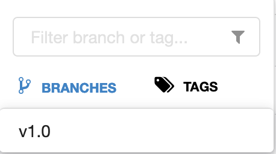
Model Monitoring and Observability
Model Monitoring and Observability
Monitoring has been configured in this workshop. Prometheus will be scraping the metrics from the model and Grafana will be the interactive visualization web dashboard.
Prometheus is an open-source systems monitoring and alerting toolkit originally built at SoundCloud. Since its inception in 2012, many companies and organizations have adopted Prometheus, and the project has a very active developer and user community. It is now a standalone open source project and maintained independently of any company. To emphasize this, and to clarify the project’s governance structure, Prometheus joined the Cloud Native Computing Foundation in 2016 as the second hosted project, after Kubernetes.
Grafana is open source visualization and analytics software. It allows you to query, visualize, alert on, and explore your metrics no matter where they are stored. In plain English, it provides you with tools to turn your time-series database (TSDB) data into beautiful graphs and visualizations.
Looking At Metrics
The Grafana dashboard has been configured.
Go to Home and find the Prediction Analytics dashboard.
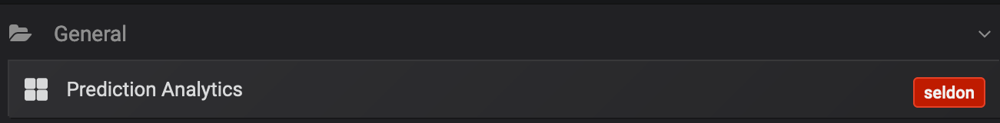
The dashboard has been configured to look at several metrics:
-
Requests/second
-
Latency
-
True/False and Positive/Negative count
-
Accuracy
-
Precision
-
Recall
-
F1
Choose your image and namespace user1-prod and view the metrics from your model.
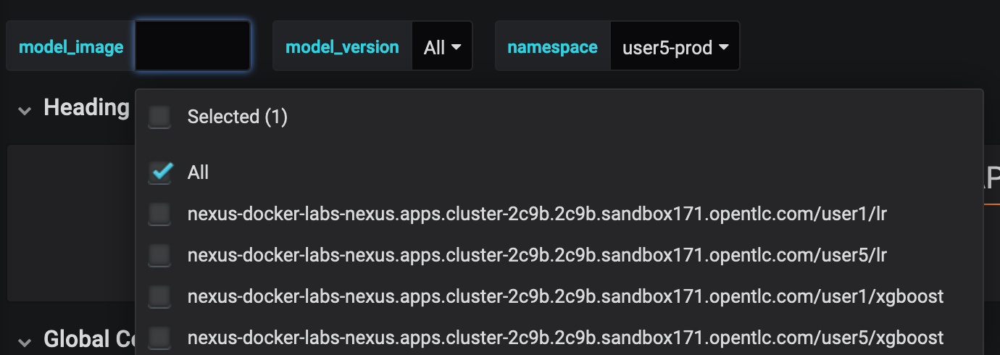
We are interested in the recall score of the model, which is the ratio TP / (TP + FN). Recall is a good metric to use when the cost associated with false negative (FN) is high. In this classification problem there is a high cost for the bank when a fraud transaction is predicted as non-fraud, since no actions can be taken. Thus, recall is one important metric to pay attention to.
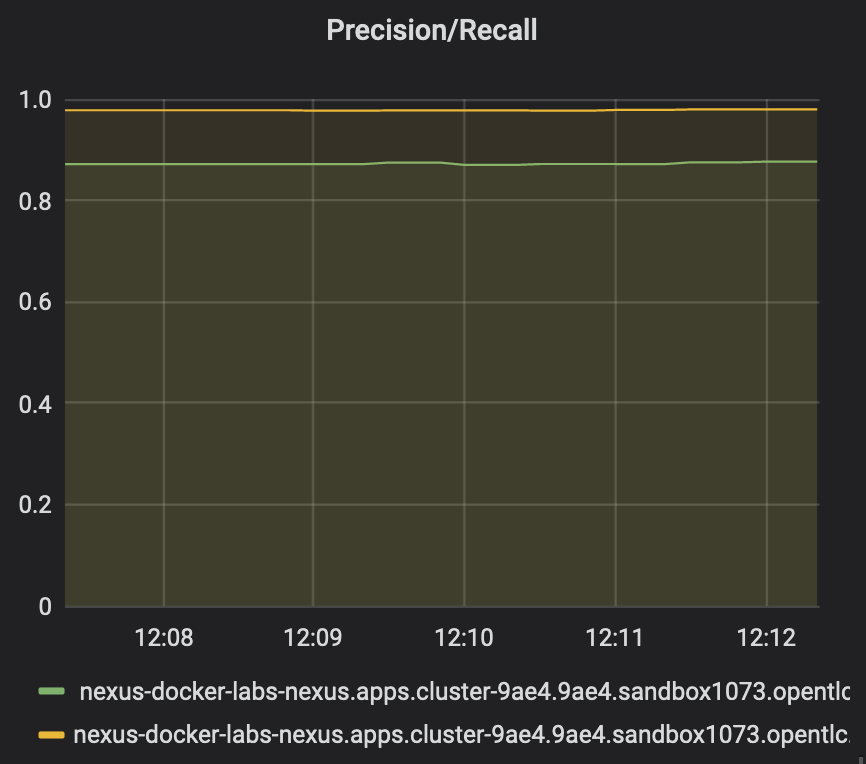
Exposing Metrics to Prometheus
Seldon models expose a prometheus /prometheus endpoint and we have configured Prometheus ServiceMonitor to scrape these endpoints.
A ServiceMonitor describes the set of targets to be monitored by Prometheus, which declaratively specifies how groups of Kubernetes services should be monitored. The Prometheus Operator automatically generates Prometheus scrape configuration based on the current state of the objects in the API server.
apiVersion: monitoring.coreos.com/v1
kind: ServiceMonitor
metadata:
name: odh-seldon
namespace: userX-prod
spec:
endpoints:
- interval: 30s
path: /prometheus
port: http
scheme: httpSeldon service orchestrator exposes core metrics such as:
-
seldon_api_executor_server_requests_seconds_(bucket,count,sum)
-
seldon_api_executor_client_requests_seconds_(bucket,count,sum)
, and custom metrics added to the model class via the Base class.
class Base(object):
def metrics(self):
pass
def send_feedback(self, features, feature_names, reward, truth, routing):
passFeedback endpoint
The Seldon model provides a /api/v1.0/feedback endpoint that allows you to send back feedback to the model, which allows us to calculate various scores.
This is extremely useful when multi-armed bandits are used for reinforced learning, so as to maximize a numerical reward signal.
Continuous Training With A/B Testing
Continuous Training With A/B Testing
It is important for us to actively monitor the quality of your model in production. Monitoring allows us to detect performance degradation, thus allowing us to decide whether we should start new experiment iterations or retrain the model with new data.
In this chapter, you will build a new model, test it in staging and deploy it to production with A/B testing.
Exploring The New Model
Go to JupyterHub and launch the notebook rh-mlops-workshop/notebooks/3 using xgboost.ipynb. The new model will be based on XGBoost.
XGBoost is an optimized distributed gradient boosting library designed to be highly efficient, flexible and portable. It implements machine learning algorithms under the Gradient Boosting framework. XGBoost provides a parallel tree boosting (also known as GBDT, GBM) that solves many data science problems in a fast and accurate way.
Build and Test A New Model
We will be using CodeReady Workspaces, and log in using the username and
password you’ve been assigned (e.g. user1/r3dh4t1!):
The model has already been converted for you using jupytext and modified to run in the pipeline.
Run the following script to use the new model:
cd /projects/rh-mlops-workshop
git checkout master
cp /projects/rh-mlops-workshop/src/train/boost.ans.py \
/projects/rh-mlops-workshop/src/train/boost.py
cat << EOF > /projects/rh-mlops-workshop/src/train/config.sh
PYTHON_SCRIPT=boost.py
RUN_NAME=xgboost
EOF
/projects/rh-mlops-workshop/src/train/train-dev.shRun the model:
cat << EOF > /projects/rh-mlops-workshop/src/seldon/config.sh
MODEL_NAME=XGBoostModel
IMAGE_NAME=xgboost
EOF
cd /projects/rh-mlops-workshop/src/seldon/
./app.sh|
Users may notice the |
Now let’s test the model. Open up a new terminal and run the following:
/projects/rh-mlops-workshop/bin/dev-test.sh|
If the new terminal takes too long to launch or the user interface freezes, try refreshing the browser or restarting the workspace. |
The code has been tested and we can now commit to development branch.
cd /projects/rh-mlops-workshop/src/train
git add *.py
git commit -a -m "my xgboost model"
git push -v origin masterThe code has now been pushed to your git repository.
Deploy to Staging With A/B Testing
We will now build the image for staging. Once the code is pushed to the stage branch, the pipeline will run.
cd /projects/rh-mlops-workshop
git checkout stage
git merge master
git push -v origin stageYou can go to OpenShift Console to monitor the pipeline run.
Once the pipeline runs finish, we will modify the SeldonDeployment to do A/B testing in staging.
|
Please ensure that the Pipeline above runs finish before proceeding to the next stage. |
cd /projects/rh-mlops-workshop
git checkout tags/v1.0 -b v1.0
GIT_REV=`git rev-parse --short HEAD`
echo "GIT REVISION: $GIT_REV"
. src/seldon/config.sh
PREV_IMAGE_NAME=$IMAGE_NAME
PREV_GIT_REV=$GIT_REV
git checkout stage
GIT_REV=`git rev-parse --short HEAD`
. src/seldon/config.sh
cd /projects/rh-mlops-model-deploy
git checkout master
sed -e "s/_USER_/user1/g" \
-e "s/_CONTAINER_REGISTRY_/$NEXUS_DOCKER_REGISTRY/g" \
-e "s/_PREV_IMAGE_NAME_/$PREV_IMAGE_NAME/g" \
-e "s/_PREV_GIT_REV_/$PREV_GIT_REV/g" \
-e "s/_IMAGE_NAME_/$IMAGE_NAME/g" \
-e "s/_GIT_REV_/$GIT_REV/g" \
seldon-model-ab.yaml.tmpl > seldon.yaml
git commit -a -m "a/b testing with $PREV_IMAGE_NAME:$PREV_GIT_REV and $IMAGE_NAME:$GIT_REV"
git checkout stage
git merge master
git push -v originYou can login to Argo CD with your user1/r3dh4t1! credential to monitor the deployment.
There will be 2 classifier pods deployed in your user1-stage project.
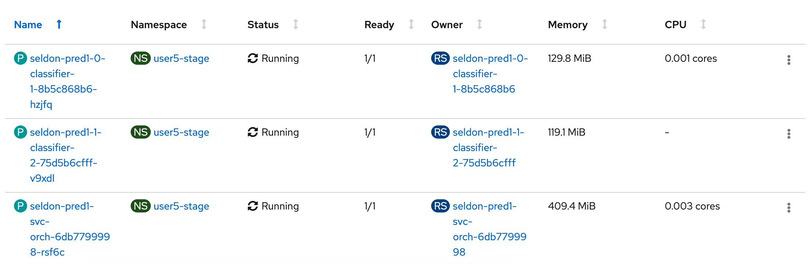
After the new model has been deployed to OpenShift, you can now run some basic tests
/projects/rh-mlops-workshop/bin/stage-test.shNow go to OpenShift Console to view the pod logs. Observe that credit card transactions have been sent to both pods by calling the /predict endpoints.
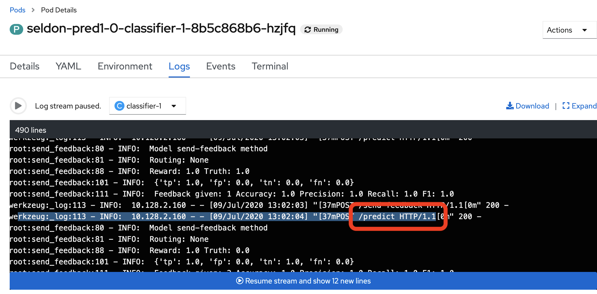
Deploy To Production With A/B Testing
We will now promote this new image to the Production environment and run some tests.
cd /projects/rh-mlops-model-deploy
git checkout prod
git merge stage
git push -u -v originAfter the new model has been deployed to OpenShift, you can run some basic tests.
/projects/rh-mlops-workshop/bin/prod-mon-test.shDeploy The Chosen One
Observing The Performance Of Both Models
Run the following script to send sufficient transactions to the models.
/projects/rh-mlops-workshop/bin/prod-mon-test.shNow look at the Grafana dashboard, and see that the Recall score, TP / (TP + FN), for XGBoost is better compared to Logistic Regression.
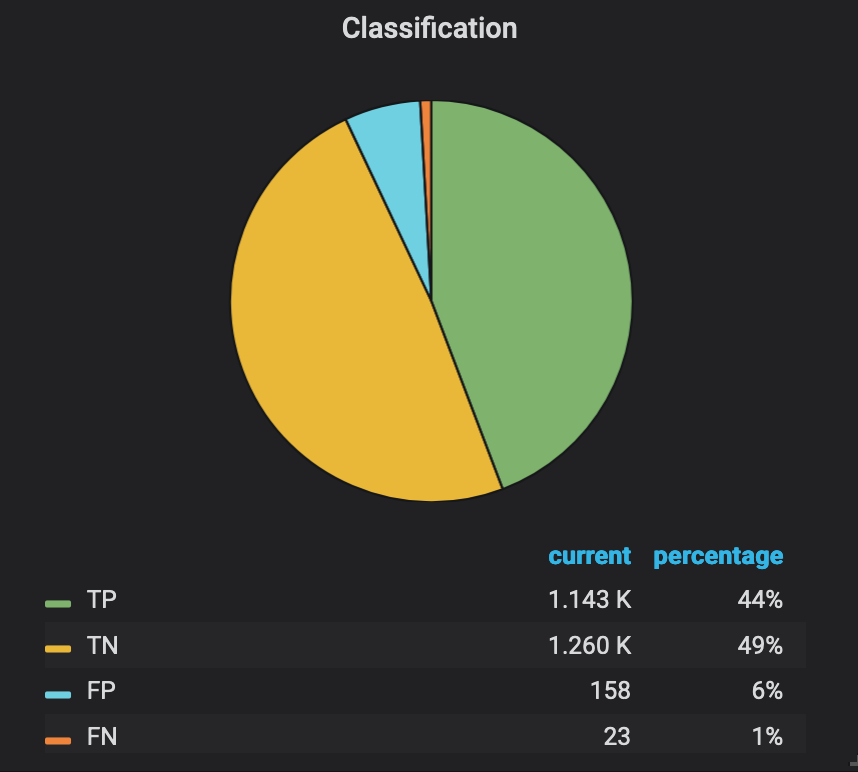
Logistic Regression
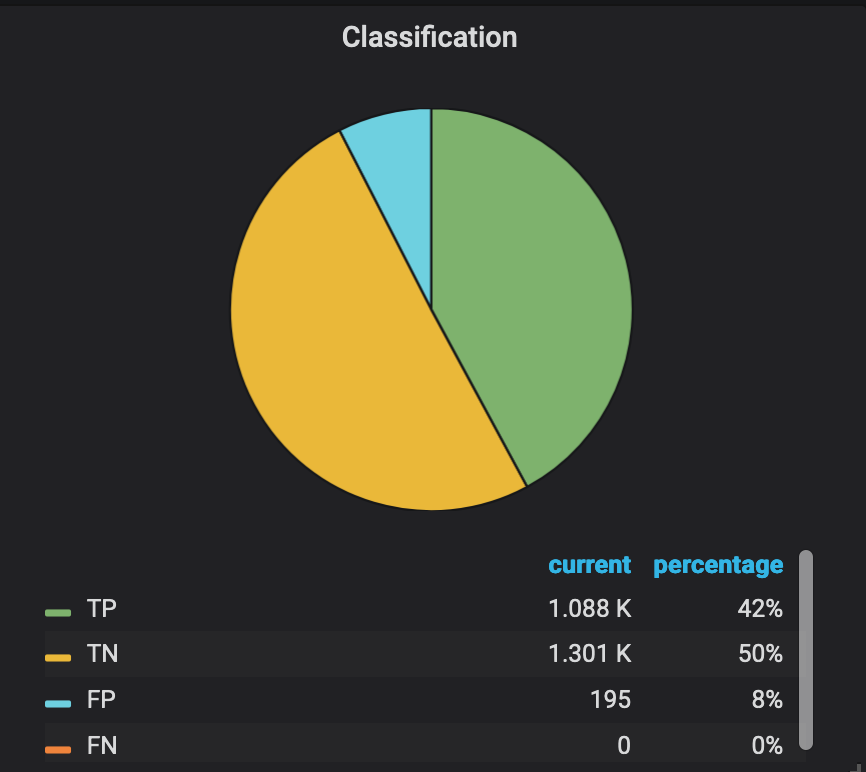
XGBoost
Deploying The Chosen One
Let’s quickly change the SeldonDeployment to use XGBoost, deploy to staging and promote it to Production.
cd /projects/rh-mlops-workshop
git checkout master
GIT_REV=`git rev-parse --short HEAD`
echo "GIT REVISION: $GIT_REV"
. src/seldon/config.sh
cd /projects/rh-mlops-model-deploy
git checkout master
sed -e "s/_USER_/user1/g" -e "s/_CONTAINER_REGISTRY_/$NEXUS_DOCKER_REGISTRY/g" -e "s/_IMAGE_NAME_/$IMAGE_NAME/g" -e "s/_GIT_REV_/$GIT_REV/g" seldon-model.yaml.tmpl > seldon.yaml
git commit -a -m "Update image tag to $IMAGE_NAME:$GIT_REV"
git checkout stage
git merge master
git checkout prod
git merge stage
git push -u -v originObserve that only a single classifier has been deployed.
After the final model has been deployed to OpenShift, you can run some basic tests.
/projects/rh-mlops-workshop/bin/prod-test.shTag It!
Great! The new XGBoost model is working better and we now can tag it as v2.0
cd /projects/rh-mlops-workshop
git checkout stage
git tag -a v2.0 -m "v2.0"
git push -v origin v2.0The tag has now been pushed to your git repository.
Completing the Solution with Red Hat Application Services
Completing the Solution with Red Hat Application Services
As a recap from what we have covered earlier in the workshop, only a small fraction of a real-world ML system is composed of the ML code. The required surrounding elements are vast and complex. In this section, the inclusion of Red Hat’s Application Services offerings will complete the solution.
We have deployed our final model based on XGBoost, but this itself is insufficient in the considerations of a comprehensive AI/ML solution. To complete the picture, we need to consider other critical aspects relevant to any AI/ML application, such as streaming data and a rules engine. In this regard, the introduction of Red Hat Application Services portfolio provides the runtime for running applications to consume incoming data streams, as well as providing integration of different software components alongside streaming to cater to data collection and a rules engine as an integral part of process management.
Red Hat Application Services Portfolio
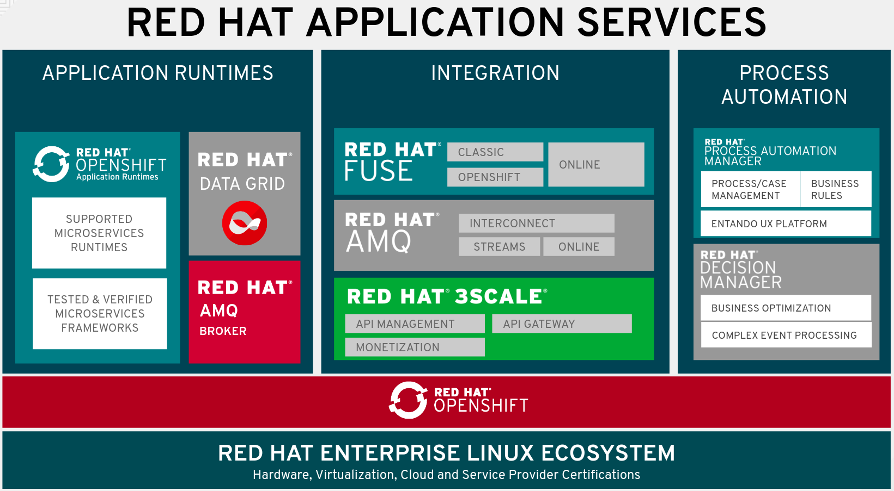
Red Hat Runtimes
For organizations looking to keep and modernize existing applications, or create net new ones, Red Hat Runtimes provide the integrated and optimized products and components necessary to deliver modern applications. IT teams can containerize applications through adoption of a microservices based architecture, improve data access performance and resilience with in memory data caching models, improve service to service communication with messaging, or adopt cloud native application development using modern development patterns and technologies. For the purposes of this workshop, the runtimes provided will host the consumer application created from SpringBoot.
Red Hat Integration suite
For organizations interested in adopting highly distributed integration deployments, Red Hat Integration provides the products and components necessary to adopt an API first approach. This allows enterprise wide visibility and control of APIs, creation of APIs to allow orchestration of services on newly developed applications or existing ones, and fast and reliable messaging which lets you to build low latency messaging and streaming solutions based on proven messaging patterns. In this workshop, Kafka streams responsible for streaming transaction data are handled by Red Hat AMQ Streams. Additionally, Camel Routing capabilities as an integration piece between different software components will be provided by Red Hat Fuse.
Red Hat Process Automation suite
For organizations looking to improve business agility, operational efficiency, and time to market, Red Hat Process Automation provides the tools and components necessary to deliver applications that automate business processes and decisions to rapidly adapt to a changing environment. Collaboration between IT and business teams enables the capture and enforcement of policies and procedures, automation of business operations, and measure. Decision making is critical in meeting business objectives, and in this workshop Red Hat Decision Manager will take charge of business rules which determine whether a transaction is a fraud or not.
Data Streaming, Integration and Business Rules
Data streaming to ensure the nature of data stays current, integration piecing different software components, business rules to accomplish business objectives, all these are crucial in any enterprise AI/ML setup, and in this section we will be covering how all these fit into the workshop we have been working on till now and how having the right middleware solution is centerpiece to ensuring all these separate components work cohesively.
Middleware Workflow
In this workshop, transactions are kept in a CSV format which is streamed over to Kafka. To determine the authenticity of the conducted transactions. we are interested as to how many of these transactions are fraudulent. Consumer application contains a Camel Router which routes the data as messages around to different components for processing and eventual output.
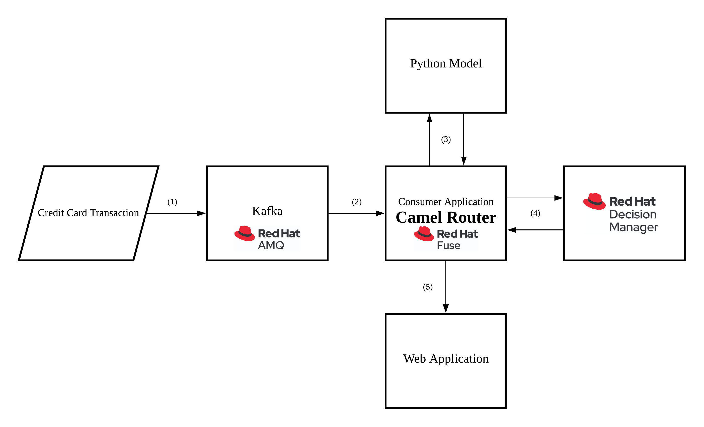
-
Credit card transactions will be streamed to Kafka
-
The Camel router will consume the transactions from Kafka broker.
-
The first stop the transaction data is routed to is the Python Model, which outputs a probability score as an indication of the transaction being fraudulent or not. The probability score is returned back to the consumer application.
-
Next, the consumer application routes the probability score to Red Hat Decision Manager, based on a threshold which determines whether the transaction is a fraud or not and returns an outcome (Fraud/No Fraud) to the consumer application.
-
The consumer application will route the outcome (Fraud/No Fraud) to a Web application to display the results so that users will be able to view.
Sending Data To Kafka
We will use Jupyter Notebook rh-mlops-workshop/notebooks/4 kafka.ipyb to send transactions to Kafka.
Begin by logging into JupyterHub.
Your user name will be user1 and password is
r3dh4t1!.
After sending the transactions, you can now go to the notification page to see the end results.
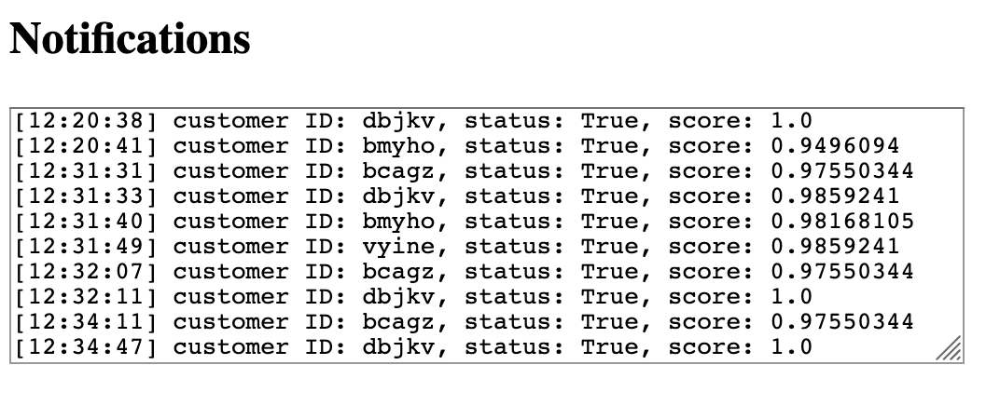
Based on the probability score returned from the model, Red Hat Decision Manager is a business rules management system (BRMS) that will decide whether a transaction is a fraud or not.
Red Hat Decision Manager 7 is a powerful, scalable open source business rules management system that includes business resource optimization and complex event processing (CEP) technology. It helps organizations capture business logic and develop applications that automate business decisions.
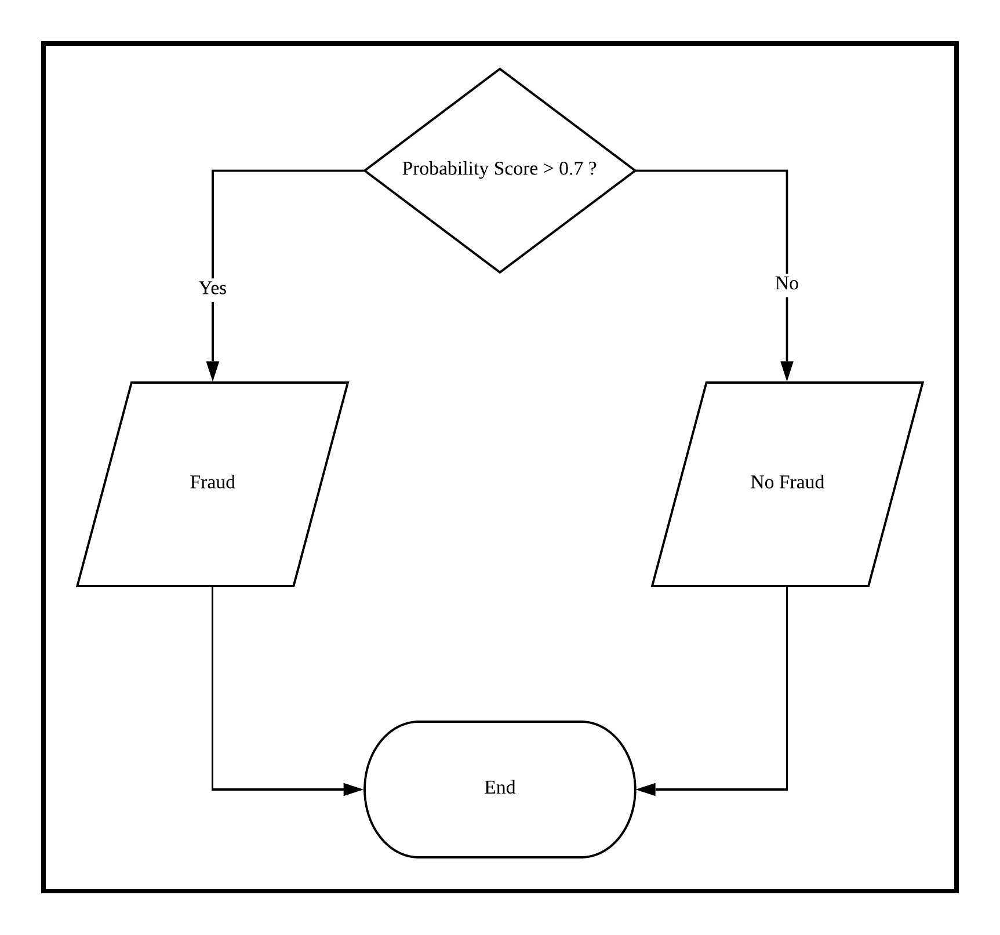
Future Enhancements
So far what we have seen is how Red Hat AMQ reliably delivers a high-performance streaming of data, whereas Decision Manager configures the business rules to determine whether a transaction is deemed to be fraudulent or not. While this may suffice for certain operations in reality, there is also scope for enhancements to cater to business requirements taking on a more sophisticated nature.
Decision Making
Decision Manager can be used to by introducing individual business processes for handling different kinds of potential fraudulent transactions
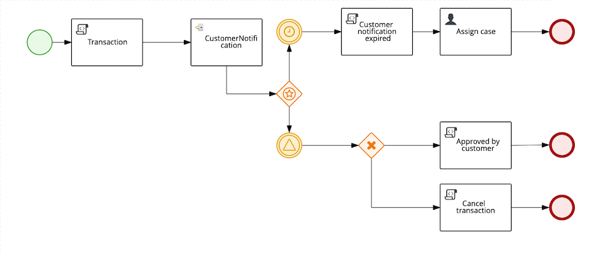
Image source: ruivieria-ccfd-demo
Here, a process is instantiated with the transaction’s data and it is consumed by the CustomerNotification node. The CustomerNotification node sends a message to the <CUSTOMER-OUTGOING> Kafka topic with the customer’s id and the transaction’s id. This message is picked by the notification service, which will send an appropriate notification (email, SMS, etc)
In the event where a customer response is not received, there is the potential of a fraudulent transaction, which will be determined after the process of a fraud investigation. In the event where verification is done by the customer, the request is deemed to be non fraudulent, though further customization can be done to investigate any fraud even if the transaction is being approved. The customer’s response determines whether a transaction is fraudulent or not, which means the outcome does not only depend on the output generated from the system, an enhancement from what we have done so far in the workshop.
Feedback loop
The customer’s response can be retained to provide a feedback loop to the training data set to further improve the quality of existing models and address any change in the environment of the data we are collecting from.
Kubernetes-native Java Runtime
Quarkus: Quarkus is a Kubernetes-native Java stack that combines some of the best and most widely-used existing Java libraries with new techniques and technologies that result in Java applications that are extremely small and fast to start. Quarkus-based applications can consume <1/10th the memory and start 300x faster compared with those on traditional Java stacks and can be potentially adopted as part of software setup to significantly bolster its capabilities.
Wrap Up
In this workshop, we have successfully carried out an end to end lifecycle delivery of a fraud detection application. OpenShift provides the enterprise container platform where models are created as images that are immutable, to cater to the reproducibility of results and ensure consistency of the software stack , all these protected with inherent security that comes out of the box from the platform.
Additionally, the NVIDIA GPU Operator is part of the Red Hat Certified Operator Catalog to automate the management of all NVIDIA software components needed to provision the GPU required in the process. To complete the picture, Red Hat AMQ streams enable a high-performance delivery of data streams while Red Hat Decision Manager to handle any associated complex event processing.
We used tools such as
-
JupyterHub from OpenDataHub to provision instances of JupyterNotebooks to create source code and visualize data, as well as building, training and testing models.
-
CodeReady Workspaces to develop the model and deploy code.
-
OpenShift Pipelines to build container images from models which have been developed and trained, and push them to Nexus registry after for eventual deployment.
-
Using Seldon to deploy the model onto OpenShift using GitOps(ArgoCD) methodology
-
For the purposes of monitoring and observability, metric collection is done by Prometheus, which uses Grafana to help users visualize and explore the metrics collected.
Getting all these tools to work cohesively together help to bring about the principles of Continuous Integration (validation of datasets and code base), Continuous Delivery (ensuring that models backed by quality assurance are constantly available in production) and Continuous Testing (retraining and serving models), practices essential to driving MLOps in any environment. With all the appropriate tooling in place, we are offered a view of how the application of DevOps principles in the realm of MLOps helps to increase automation in an environment traditionally fraught with manual processes and difficulty with getting different systems to work cohesively, and subsequently primed to increase the quality of production ML.
While data science models play a critical role in modern businesses, we have seen how it is part of a larger picture consisting of many other important moving parts, and the cohesive integration of all involved components deterministic to the successful delivery of business objectives. With the right infrastructure and practice in place, MLOps empowers Data Science and IT teams to collaborate seamlessly in ways previously thought to be impossible and builds the foundation for agile practices that improve the quality of ML productions while addressing business and regulatory requirements.